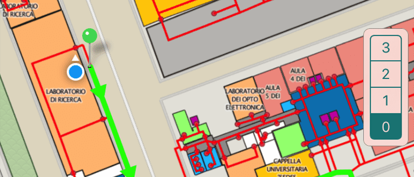
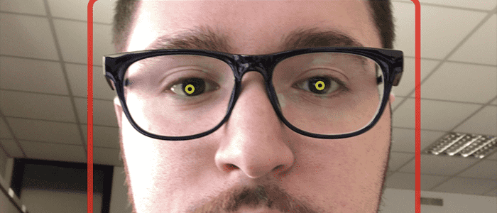
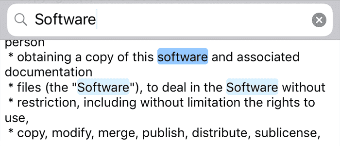
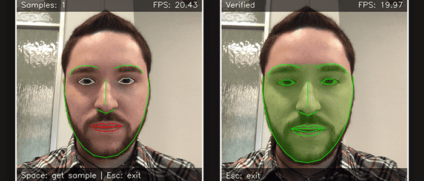

I've worked on quite a bit of stuff throughout the years. This is a curated selection of some of the projects I enjoyed the most. Many of them are open source.
iCleaner
The popular system cleaner for jailbroken iOS, with many millions of downloads and tens of thousands daily users. Reviewed by some of the top Apple news sites.
iOS

BeFree
Indoor navigation iOS app employing ad-hoc routing algorithms which account for the potential disability of the user in order to suggest the most suitable path.
iOS
Adaptive Video Player
HLS Player for iOS supporting manual selection of adaptive stream quality (not possible via public APIs) by exploiting a specialized, opaque HTTP proxy.
iOS
Open Source

FaceAuth
Enhancing weak client-server user authentication with facial recognition. It's made of an iOS client (Swift & Objective-C++) and of a Python authentication server.
iOS
Open Source

ICTextView
Popular open source iOS library that extends the native text view, adding string and regex-based search and match highlighting.
iOS
Open Source
Vector(T)
A type-safe, generic vector implementation written in C. It has a rich API, featuring automatic resizing, support for equality, and "higher order" style macros.
Open Source
uHash
A type-safe, generic hash table implementation written in C. Its goal is to provide a comprehensive API, good performance and low memory footprint.
Open Source
OWL API for iOS
iOS API for parsing and manipulating OWL ontologies, carefully profiled and optimized for parsing speed and low memory footprint.
iOS
Research
Open Source
Mini-ME Swift
The first OWL reasoner for the iOS platform, advancing the state of the art both in terms of turnaround time of inference tasks and memory usage.
iOS
Research

FacePy
Python framework for facial recognition, integrating a number of algorithms for real-time face verification and batch face identification purposes.